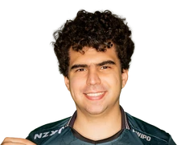

Circuito Desafiante · Brazil
In short
The top 15 of the 45 Circuito Desafiante players that are indexed with an account, measured on br1. For each one the best account is published, not all of them: a professional with several has a single rank that counts. The table runs from Challenger · 3247 LP to Challenger · 2356 LP.
| # | Player | Team | Role | Rank | SoloQ account |
|---|---|---|---|---|---|
| 1 |  Bwipo |
EST | Top | Challenger · 3247 LP | EST Bwipo#1810 |
| 2 | Guigs | KBM | Support | Challenger · 3014 LP | guigs#00000 |
| 3 | konseki | INTZ | Support | Challenger · 2992 LP | konseki#knsk |
| 4 | Drakehero | NERD | Jungle | Challenger · 2911 LP | Kevin D Bruyne#Drake |
| 5 | Kojima | KBM | Bot | Challenger · 2828 LP | Kojima#ゲツヨウビ |
| 6 | Pilot | NERD | Challenger · 2740 LP | Pilot#9920 | |
| 7 | Qats | VKS.A | Mid | Challenger · 2680 LP | Qats#BR2 |
| 8 | bulas | 7REX | Support | Challenger · 2617 LP | bilu#bulas |
| 9 | Nero | RMD | Challenger · 2512 LP | Nero The Fik#zay | |
| 10 | Grevthar | KBM | Mid | Challenger · 2504 LP | Grevthar#BRA1 |
| 11 | SuperCleber | VKS.A | Top | Challenger · 2476 LP | SuperCleber#Super |
| 12 | Hakari | 7REX | Top | Challenger · 2394 LP | 7REX Hakari#愛憎の影 |
| 13 | SCARY | KBM | Challenger · 2381 LP | backstage#tue30 | |
| 14 | Envy | EST | Mid | Challenger · 2360 LP | potato the cat#envy |
| 15 | Yupps | KBM | Top | Challenger · 2356 LP | Odysseus#Tróia |
The 8 most played champions in the recent match history of Circuito Desafiante players. LeeSin leads with 84 games and 67 % wins. The DPM is weighted by games, it is not an average of averages.
| Champion | Games | Wins | Average DPM | Players | Plays it most |
|---|---|---|---|---|---|
| LeeSin | 84 | 67 % | 74 | 11 | Drakehero |
| Camille | 83 | 52 % | 65 | 16 | jmz |
| Qiyana | 73 | 55 % | 75 | 7 | Hirotto |
| Aatrox | 64 | 59 % | 74 | 7 | Hirotto |
| Locke | 63 | 62 % | 82 | 10 | Envy |
| Caitlyn | 56 | 52 % | 69 | 11 | Zoen |
| Yone | 53 | 53 % | 75 | 5 | Envy |
| JarvanIV | 52 | 62 % | 75 | 7 | StineR |
The next 3 Circuito Desafiante matches, spread over 3 days, with kick-off times in UTC. The first one is KBM vs INTZ, on Monday 7 September at 20:00 UTC.
Playoffs · Bo5
Playoffs · Bo5
Finals · Bo5
Official Circuito Desafiante schedule on lolesports, read on 2026-09-03. The Circuito Desafiante times here are UTC, not local time: this page is served identically everywhere. The bot watches those same players on br1 and alerts when they queue up for SoloQ.
Bwipo (EST, Top), at Challenger · 3247 LP. It is the highest of the 45 Circuito Desafiante players that LoLProTrackr has indexed.
45 players across 10 teams, with about 155 SoloQ accounts between them: an average of 3.4 accounts per player. It comes from counting the Circuito Desafiante leaderboard, not from an estimate.
Yes. LoLProTrackr posts to your Discord channel with the champion, the role, the rank and the team of the Circuito Desafiante player as soon as the game starts, without you having to ask for anything.
7REX (7REX), Estral Esports (EST), INTZ (INTZ), KaBuM! Ilha das Lendas (KBM), NERD (NERD), paiN Gaming Academy (PNG.A), GnG Amazigh (REDA), RMD (RMD), TSS (TSS), Vivo Keyd Stars Academy (VKS.A).
KaBuM! Eports vs INTZ, on Monday 7 September at 20:00 UTC (Playoffs). After that there are 2 more spread over 3 days of the schedule.
From each player's known accounts, checked one by one against Riot's API on br1. For every player the highest-ranked account is published, not all of them: someone with four accounts has a single relevant rank, the one they compete on.
LoLProTrackr posts this alert to your Discord channel —or your DMs— the moment a player enters a game, across the 20 leagues in the catalogue. Free.
The free plan follows one league; up to 4 on the paid ones, which is the real ceiling set by Riot's request quota.